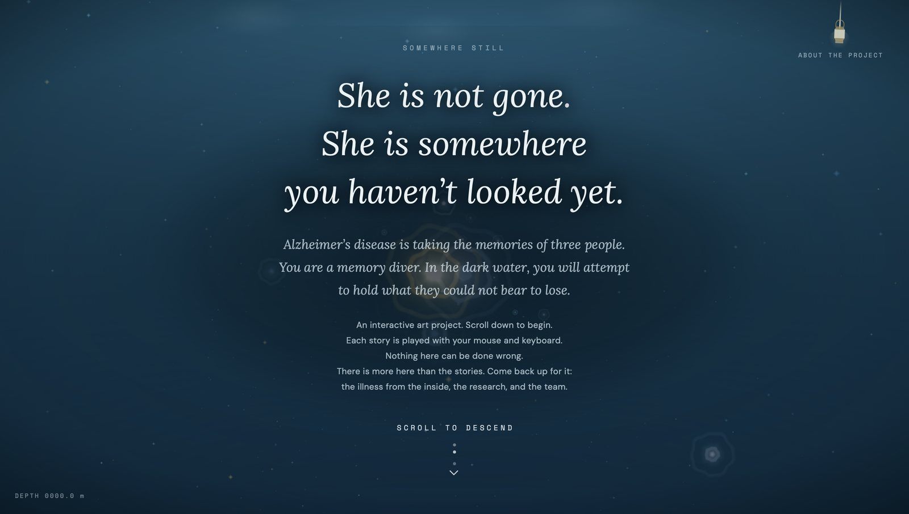
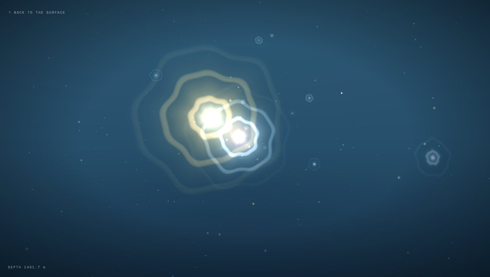
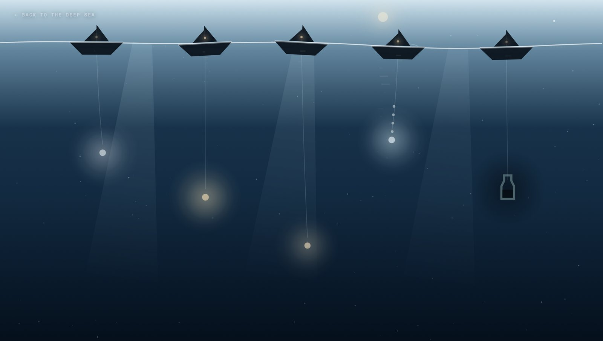
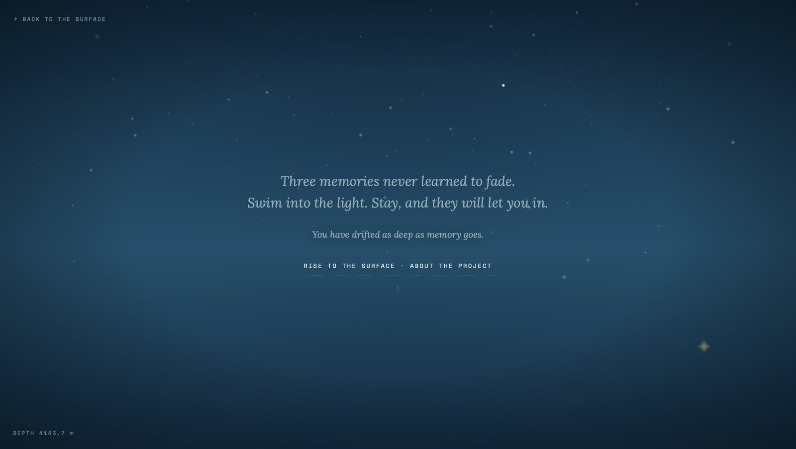
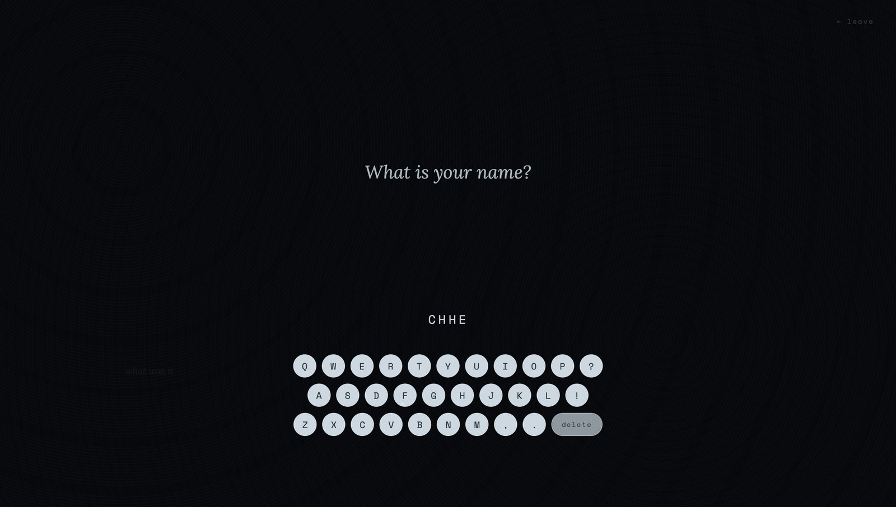
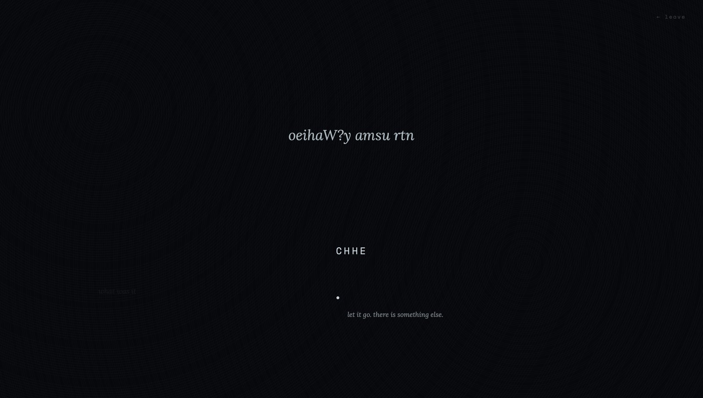

Case File #001
Somewhere Still
A browser experience about Alzheimer’s, built as a descent into deep water. Three lives, seven symptoms, and an interface that performs the condition instead of describing it.
Team credit: narrative and research by Elin Kok Jia Yi, visual assets by Emily Blum, audio and sound design by Fatih Kulualp. I wrote all of the code and designed the site, including the design language and technical chapters of the dissertation.
Concept
Sinking, not forgetting
Most digital work about Alzheimer’s explains it. A timeline of stages, an infographic of the brain, a simulation you watch from outside. All of it keeps the visitor in the position of the observer, which is the one position from which the condition cannot be understood.
The site puts the visitor under water instead. You scroll to descend, the light thins, the fog closes, and three lives drift past as ripples you can enter. Nothing announces itself as a metaphor for cognitive decline. You just sink.
The design rule underneath everything: the interface performs the symptom rather than naming it. That single sentence decided the colour system, the typography, the camera, and what the site refuses to tell you.
Design language
Five rules, held everywhere
Colour identifies a person, never a control
The constraint I enforced in codeCool tones are the system: the ocean descends through four fixed depth values, from sea surface at #225986 to the abyss at #05111E, with the fog section sitting at the darkest point in the whole palette. Warm hues belong exclusively to people.
Margaret’s red is the strictest rule in the build. It appears in her thread and her ripple core and nowhere else, and it is programmatically prevented from rendering in the other two threads. Using a character colour on a button would have handed a person’s identity to a piece of system furniture, so no button ever gets one.
Three typefaces, three speakers
Lora Italic is used only for character dialogue. DM Sans is the interface. Space Mono is reserved for system apparatus: the depth readout, the descent prompt, the ship lamp label, the clinical footnotes. A visitor can tell who is speaking without being told.
The entry screen uses Lora alone. The interface typefaces are withheld until the descent begins, so the narrative establishes itself before any system voice appears.
Affordances stay, signifiers get quiet
Where the theory earned its placeNorman separates an affordance from the signifier that advertises it. Every interactive object here remains fully functional while its cues stay deliberately subtle: a pulsing opacity glow, a three-state cursor that rests, wakes and presses, and staggered phase timers so objects in one room breathe independently rather than in unison.
An opening tutorial was written and then rejected. It would have taught
the vocabulary in ten seconds and removed the discovery the piece
depends on. Instead a priming flag renders each cue at full strength on
first contact only, teaching once and then receding. Under
prefers-reduced-motion
the pulse becomes fixed opacity.
A camera that lags behind the hand
The research made visibleThe rig is two nested groups. The outer holds position and answers scroll; the inner holds rotation and answers the pointer. They are independent, so looking around while sinking does not stop the descent, and stopping the descent does not take away the freedom to look.
Scroll reaches the camera through an eased value closing six percent of the remaining distance per frame, so fast scrolling gets a delayed answer and the water never tracks a hand exactly. Field of view widens from 68 to 82 degrees across the full descent: the subject holds its size while the space around it stretches. That dolly zoom was chosen to reflect the reduced depth and distance perception documented in our primary research, and it produces a disorientation visitors feel without being able to point at its cause.
Withhold inside the story, cite outside it
The decision I defend hardestInside the three threads, symptoms are never named. Margaret’s mother’s white shoes fuse with a doll’s red ones, and the interface simply accepts the input without correction. That is confabulation, performed rather than captioned. Megan’s canvas colours shift and no prompt explains why. Naming it would hand the visitor the observer’s seat again.
The clinical section does the opposite, and the order matters. Each of seven stages ends in a failure the visitor performs themselves. In stage three an on-screen keyboard refuses to let letters assemble, which is anomia. Roughly three seconds later, a footnote surfaces in the corner citing the literature. Putting the citation after the friction converts a reference into recognition.
Build
Engineering decisions
Libraries per document
Three.js for the ocean and the fog. p5.js for Megan’s painting surface. Thomas loads both. Margaret loads neither, running on Canvas 2D and CSS custom properties.
The thread with the heaviest visual treatment carries the lightest stack. p5 loads on demand for her closing sequence, so only visitors who reach the end pay for it.
Entry weight
104 KB of local code on entry against 1,097 KB for the site as a whole. The multi-page architecture is what makes that split possible.
GLSL, not CSS filters
Marine ripples and marine snow run through ShaderMaterial. CSS filters work on a fixed operation set and cannot take uniforms updated per frame by scroll depth.
p5 in instance mode
Global mode would have collided with Three.js. Instance mode keeps both libraries in one document without namespace conflict.
Local first, CDN fallback
Every library resolves locally and falls back to a CDN, including the hand-tracking model. A submitted build should not depend on a third party staying up.
No build step
The source files are exactly what the browser runs. A minifier was considered and left out so the delivered code stays readable, at a cost of 180 to 305 KB per thread script.
Detail
Paint that dries badly
Megan is a painter. Her studio runs four independent p5 buffers: the room, a static reference artwork, the visitor’s own strokes, and a memory layer above them, so her marks can diverge from what she meant to paint while both stay visible at once.
The engine holds up to two hundred wet marks at a time, each moving through five settling stages over 1.6 seconds, bleeding and granulating at the edges and occasionally dripping. Past the cap, the oldest marks fade out rather than vanishing.
A lucidity scalar drives a colour shift in HSB space as her clarity declines, so the same gesture produces a wider, more distorted mark than it did ten minutes earlier. Applying that as a post-process filter over a finished stroke was tested and rejected: the drift has to happen at the moment the paint lands, or the visitor never connects the change to their own hand.
There is no screenshot of this one. A still frame shows a mark; the whole point is what the mark does over the next 1.6 seconds, so it only reads in motion. Open her studio and put down a few strokes.
Interface
The descent, and the fog






Testing
What testers changed
Remote feedback plus moderated in-person sessions. The changes below are the ones that came from watching people fail at something I had assumed was obvious.
- Nobody knew what was clickable. The subtle-signifier principle had gone too far. The three-state cursor and the breathing cue system exist because of this, and they are the fix that kept the principle intact instead of abandoning it.
- “Descend” was not an instruction. It read as a mood word. Changed to “scroll to descend”, which is less elegant and considerably more useful.
- The landing page could be clicked straight through. Visitors skipped the moment the whole piece is built on. Locked it so the descent has to be scrolled.
- The thread order was wrong. Originally Margaret, Megan, Thomas. Reordered to Megan, Thomas, Margaret so the sequence follows the progression of the disease rather than the order we happened to build them.
- Nobody could describe the story afterwards. Each thread worked; the arc across them did not survive. “The Whole of It” was built in response, unlocking after a thread and carrying a shared visual language with per-character treatment.
- Audio was silently blocked on the live domain. It worked locally and failed on Netlify’s fresh domain because of autoplay policy. Added guarded playback and a context unlock to recover it.
Reflection
What I’d change
- Subtlety needed a floor, and I found it too late. Withholding signifiers was the right principle and I pushed it past the point where people could act. Testing rescued it. A first round two weeks earlier would have cost far less rework.
- Thread scripts are 180 to 305 KB and unminified. Defensible for a submitted academic build where readable source is part of the deliverable. Not defensible for anything with real users on mobile data.
- Three threads, one shared vocabulary, three separate codebases. The cursor, the cue timers and the descent logic are implemented more than once. A shared module would have made the fourth section cheaper to build.
- Accessibility stopped at reduced motion. That one is handled properly, but a piece built on visual subtlety and scroll has no real path for a screen reader or keyboard-only visitor, and I do not have a good answer for what that version should be.